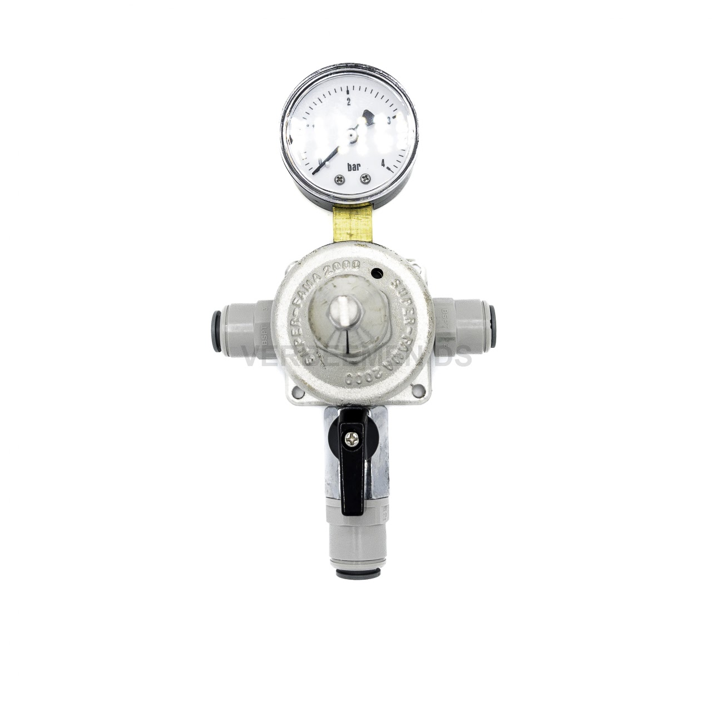

Détendeurs primaires et secondaires pour CO2, N2 et gaz mélangé. Seuls ou assemblés en batterie, avec les matériaux et joints adaptés à votre type de gaz et à votre plage de pression.

Super-Fama 2000 · détendeur secondaire
Fixé sur la bouteille ou le cadre de gaz, le détendeur primaire réduit la pression de la bouteille (qui peut atteindre plusieurs centaines de bars) vers une pression intermédiaire exploitable en direction de l'installation. C'est la première et la plus importante étape de sécurité du système.
Plus loin dans la ligne, souvent par mur de tirage ou par zone, un détendeur secondaire amène la pression intermédiaire à la pression de service exacte. Dans les installations à plusieurs postes ou sur de longues distances, cela compense la perte de charge et assure une qualité de tirage constante en chaque point.
L'aperçu ci-dessous est un point de départ — chaque version est adaptée à vos spécifications. Demandez la fiche technique pour les valeurs de pression exactes par modèle.
Montés directement sur bouteille ou cadre. Adaptés au CO2, au N2 et au gaz mélangé selon la version.
PrimairePour un réglage fin par zone ou mur de tirage, généralement installés après un détendeur primaire.
SecondaireSpécifiquement dimensionnés pour les mélanges CO2/N2, avec matériaux et joints adaptés.
Gaz mélangéPlusieurs détendeurs assemblés pour les installations à plusieurs lignes de gaz ou grandes salles de tirage.
Sur mesureManomètres de rechange, éléments de vanne et pièces pour l'entretien des installations existantes.
Pièces| Type | Fonction | Gaz | Montage | Version |
|---|---|---|---|---|
| Haute pression / primaire | Bouteille → pression intermédiaire | CO2 / N2 / mix | Sur bouteille ou cadre | Seul ou en batterie |
| Basse pression / secondaire | Intermédiaire → pression de service | CO2 / N2 / mix | Mur ou zone | Par mur de tirage |
| Gaz mélangé | Bouteille/intermédiaire → service | Mix CO2/N2 | Bouteille, mur ou cadre | Sur mesure |
| Batterie / rampe | Répartition sur plusieurs lignes | CO2 / N2 / mix | Montage mural | Assemblage sur mesure |
Un détendeur primaire réduit la pression directement depuis la bouteille ou le cadre de gaz vers une pression intermédiaire exploitable. Un détendeur secondaire réduit ensuite cette pression intermédiaire jusqu'à la pression de service exacte par tirage ou par ligne. Dans les installations avec plusieurs postes ou de longues distances, un détendeur secondaire par zone est souvent ajouté pour compenser la perte de charge.
Certaines séries de détendeurs conviennent au CO2, au N2 et au gaz mélangé, d'autres sont conçues spécifiquement par type de gaz. Le choix des matériaux et des joints en dépend. Indiquez toujours le type de gaz et la pression de service dans votre demande afin que nous puissions proposer la bonne version.
Cela dépend de l'intensité d'utilisation et de l'environnement, mais un contrôle visuel périodique (manomètre, raccords, fonctionnement de la vanne) est recommandé. En cas de doute sur le fonctionnement ou d'usure visible, il est conseillé de remplacer le détendeur ou ses pièces.
Nous proposons la version de détendeur adaptée et fournissons un devis selon votre volume.